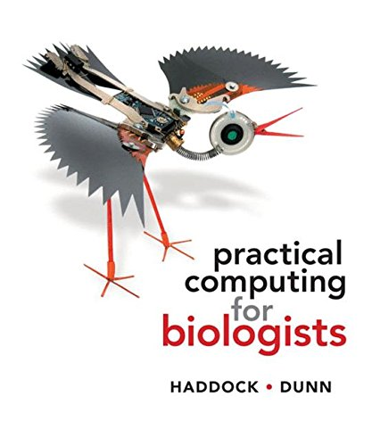

Syllabus
2026
1. COURSE DESCRIPTION:
The methods, applications, and implications of genomics–the analysis of whole genomes. Microbial, plant and animal genomics are addressed, as well as medical, ethical and legal implications. The lab provides exposure and experience on a range of bioinformatics approaches–the computer applications used in genome analysis. Much of this course content was written by Professor Matthew MacManes
2. CONTACT INFORMATION:
Instructor: Jeffrey Miller
Email: jeffrey.miller@unh.edu
Office: Rudman 312
Office hours: 11-12pm or by appointment
TA: NA this year
Office:
Email:
Office hours:
3. LECTURE:
MWF 10:10-11:00PM Murkland 202
4. LAB:
Friday 3:10-5:00PM in James G
5. WEB RESOURCES:
Canvas: I will use this for grades
Website: https://jthmiller.github.io/GEN711_S21/
SummerWorkshops: https://angus.readthedocs.io/en/2019/
Google: All of the computational tools you’ll learn this semester has been discussed by the world-wide bioinformatics community. A huge part of applied bioinformatics is a matter of learning how to ask the question in way that someone else has. Stackoverflow.com is where it’s at!
6. ASSIGNMENTS AND EXAMS:
Lab Assignments: These are assigned in lab, and typically involve some sort of sequence analysis, short answer questions, and the notes that you took during lab. You may work in groups, but you must submit your own report. These will be due in lab, unless otherwise instructed. NO late assignments accepted. 9 labs, lowest dropped. 80/200 lab and discussion points
Lab Practicals: Two lab practical exams (50 pts, 100/200 of the lab points).
Paper Discussion Participation Points: We will discuss genomics and bioinformatics papers over the semester. Groups will be tasked with summarizing the paper to get discussion rolling. Participation in this discussion will earn 20 points (20/100)
On presentation day: Each group will lead class through discussion of the chosen paper. Groups should email me their slides no later than 9am of their presentation day. At least 1 slide by the grad student in each group to introduce the topic, their research and larger questions addressed by the paper. The intro should address questions such as “What is the goal of the study and why is the study important enough to be published?” Students should present 1-2 Methods slides (Use methods figure from paper or from web and cite it!) to answer: ‘What is the experimental design?’, ‘Was something sequenced and how?’. 1 Results slide (at least) should be presented per figure (Interpret each), and answer: ‘What was measured and/or tested?’ and ‘What observation/conclusion does the figure support?’ For discussion, one slide ( more as needed so that everyone has at least one slide) should address ‘What did they do well? What could have been done differently? What is next?’ Each group needs to answer questions to clarify answers to the questions above.
Exams: There will be 2 exams covering both lecture and lab material. Each will be worth 100 points. The dates for these will be March 14 and April 28. Makeup exams will be permitted only under extreme documented circumstances, or by prior approval (>1week) from the instructor.
Final Project: The final project will consist of a GitHub project submission, and an oral presentation on the final project given in lecture (or on zoom as time sees fit). Projects must incorporate an implementation of the computational techniques we’ve learned about in lab. The final project will be worth 100 points (75 submission and 25 oral). You may work in groups (<5 members - mix of grad and undergrad encouraged), with the understanding that expectations increase with group size, given the division of labor. More details will be provided later in the semester.
7. MATERIALS NEEDED:
Non-Required but potentially useful Textbook: PRACTICAL COMPUTING FOR BIOLOGISTS 1st edition by Haddock and Dunn. It is available on Amazon new, used and for rent. I think that there is a Kindle version if that is your thing! It should also be available in the campus bookstore, but you may pay more there!
RON Account: We will set up computing accounts on the teaching cluster for each student
Laptop: Please no one purchase a laptop for this course!!! But please bring it to all course meetings if you do. A Mac or Linux machine will make your life much easier. Windows machines will work with some additional effort.
8. GRADES:
The grade scale is: 94-100=A; 90-94=A-; 87-90=B+; 84-87=B; 80-84=B-; 77-80=C+; 74-77=C; 70-74=C-; 67-70=D+; 64-67=D; 60-64=D-; Below 60=F
| Item | Maximum Points |
|---|---|
| Exams (2 x 100) | 200 |
| Discussion Participation | 50 |
| Final Project + Presentation | 100 |
| Lab Practical (2 x 50) | 100 |
| Lab Notebook | 25 |
| Participation | 25 |
| Total Points | 500 |
9. COURSE POLICIES:
Student conduct: Honesty is a core value at the University of New Hampshire. The members of this academic community require and expect one another to conduct themselves with integrity. The Student Rights, Rules and Responsibilities handbook (www.unh.edu/student/rights) explains UNH’s expectation for academic honesty and defines those actions that constitute academic misconduct with regard to exams, homework, plagiarism, computers, etc. The penalty for the first incident of cheating, plagiarism or other breaches of the university’s academic honesty policies will be an automatic F grade for that assignment. A second infraction will result in an F grade for the class. The Dean’s office will be notified and dismissal from the university could result.
Disability Services for Students: The University of New Hampshire is committed to providing students with documented disabilities equal access to all university programs and facilities. If you have a disability requiring accommodation, you must register with Disability Services for Students (DSS). Contact DSS at 862-2607. If you have received an Accommodation Letter for this course from DSS, please meet with me privately to review those accommodations.
10. CODE OF CONDUCT:
Need Help? You can reach the course instructor, Jeffrey Miller at Jeffrey.Miller@unh.edu. Conversations are held in confidence, to the extent that it is allowed by UNH policy (https://www.unh.edu/sharpp/reporting-requirements) and state and federal law.
The Code: Our class is dedicated to providing a harassment-free classroom experience for everyone, regardless of gender, age, sexual orientation, disability, physical appearance, race, or religion (or lack thereof). I do not tolerate harassment of class participants in any form. Sexual language and imagery is not appropriate for any class venue. Class participants violating these rules will be reported to the COLSA Dean’s office.
Harassment includes offensive verbal comments related to gender, age, sexual orientation, disability, physical appearance, race, religion, sexual images in public spaces, deliberate intimidation, stalking, following, harassing photography or recording, sustained disruption of talks or other events, inappropriate physical contact, and unwelcome sexual attention. Class participants asked to stop any harassing behavior are expected to comply immediately. If a participant engages in harassing behavior, the instructor may take any action they deem appropriate, including warning the offender, or reporting to the Dean’s office. If you are being harassed, notice that someone else is being harassed, or have any other concerns, please contact me or the TA immediately.
We will be happy to help participants contact local law enforcement, provide escorts, or otherwise assist those experiencing harassment to feel safe for the duration of the class. This code of conduct was adapted from http://angus.readthedocs.io/en/2019/code-of-conduct.html
11. HOW TO GET AN A:
Receiving an A in this should be really easy (I mean it!), assuming you follow these basic guidelines. - Come to class and lab, pay attention, be interactive: Active learning far outcompetes passive, so while coming to class itself is good, interacting/asking questions will be much better. - Ask questions when your confused. Come to office hours, or schedule a time to meet. - Don’t cram! Study a little, several times per week. You will remember more, and the exams will be less stressful.
12. COURSE SCHEDULE - SUBJECT TO CHANGE:
| Week | Topic | Lab |
|---|---|---|
| 1. Jan 18 | Intro to Bioinformatics & Next Gen Seq | Take home lab |
| 2. Jan 25 | Sequence Data & Technology (stats intro) | Intro to Bioinformatics 1 |
| 3. Feb 1 | DNA & RNA Seq, Metadata and Genome Alignment | Intro to Bioinformatics 2 |
| 4. Feb 8 | Genome Assembly and Annotation | Intro to the Command Line 1 |
| 5. Feb 15 | Alignment and Genome Data (BLAT/HMM/others) | Intro to the Command Line 2 |
| 6. Feb 22 | Molecular Evolution Review & Exam 1 (Mar 14) | Data Wrangling and Processing 1 |
| 7. Mar 1 | Molecular Evolution & Comparative Genomics | Data Wrangling and Processing 2 |
| 8. Mar 8 | Comparative Genomics | Practice Practical in Lab |
| 9. Mar 15 | BREAK | No Lab |
| 10. Mar 22 | Community Genomics | Practical Exam Given in Lab |
| 11. Mar 29 | Statistics and Genomics | Github and Project Setup |
| 12. Apr 5 | MDS and Linear Models | Genome Assembly & Project work |
| 13. Apr 12 | Functional Genomics | Genome Assembly & Project work |
| 14. Apr 19 | RNA and Transcriptomics and Exam Review | Practical Exam Given in Lab |
| 15. Apr 26 | Apr 28, EXAM 2 | Genome Assembly & Project work |
| 16. May 3 | Last day of classes (May 4th) | No Lab |
Notes: - Spring Break is the 16th-20th - Final exam week begins May 6th
